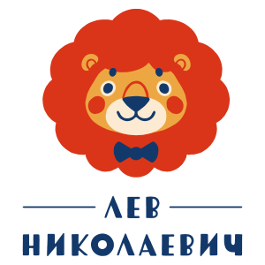

Выходные с малышом, которые нравятся и вам
Чаще всего к нам приходят с малышами от 5 месяцев до 4–5 лет. Возраст указан у каждой программы. Если сомневаетесь, подойдёт ли концерт вашему ребёнку, напишите нам, подскажем.
45–60 минут, без антракта.
Сидеть не обязательно. Детям можно вставать, ходить, танцевать, подпевать, выйти из зала и вернуться. Артисты сами вовлекают малышей в игру.
Программа одна и та же. На ранний сеанс чаще приходят с малышами до 3–4 лет, на второй — с детьми постарше. Выбирайте время, удобное вашему ребёнку.
После оплаты на почту придут письмо с номером заказа и чек. Иногда они попадают в спам. На входе достаточно назвать фамилию.
Да, билет нужен каждому, и взрослому, и ребёнку. Второй ребёнок в семье до года проходит бесплатно.
Билет можно перенести на другой концерт, если написать нам за день до концерта. При болезни ребёнка вернём деньги по справке. Все условия — на сайте: levnicolaevich.ru/ticketrefund.
На всех площадках есть гардероб, коляску оставляют в холле.